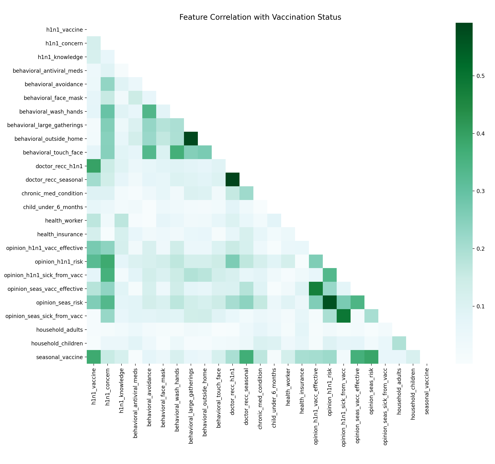
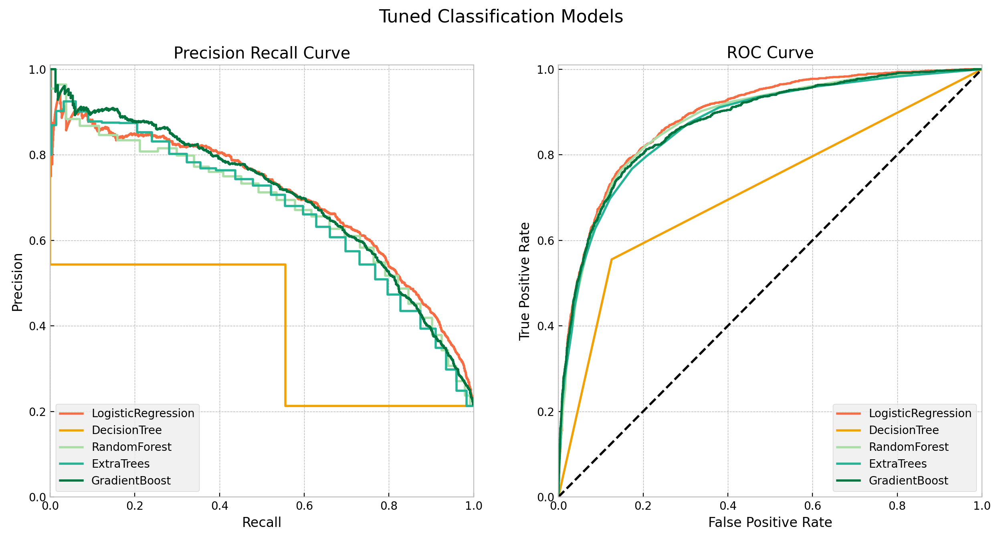
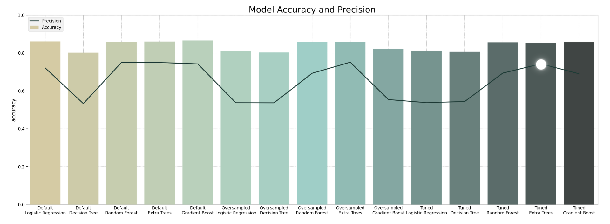
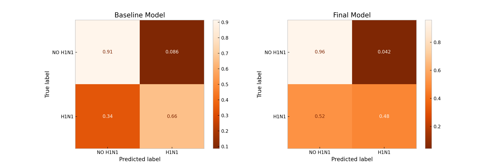
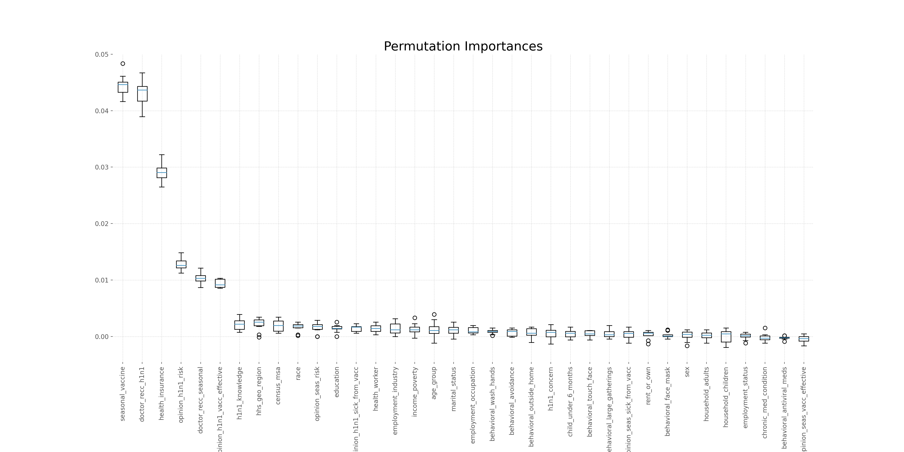

Project

I. Overview
An analysis and classification modeling of over 25,000 survey responses is completed to guide public health efforts on vaccination outreach. The highest accuracy and precision of 86% and 75% respectively is attained by the Extra Trees model predicting H1N1 vaccination status. According to the permutation importances of the model, the top features that affect H1N1 vaccination status are seasonal flu vaccination status, direct recommendation from a doctor, and health insurance.
II. Business Problem
Public health agencies may be able to improve their vaccination outreach by understanding people’s opinions and behaviors that may be related with whether they receive the vaccine or not. Doing so will guide public health efforts such as education campaigns to focus on the characteristics that are likely to result to vaccination as supported by relevant data. Using national survey responses, I describe vaccination patterns and classify H1N1 vaccination status based on features such as opinions on risks of H1N1 and vaccine effectiveness, and behaviors towards mitigating H1N1 transmission.
III. Data Understanding
The H1N1 Flu Survey from late 2009 and early 2010 collected over 25,000 responses and covered questions about the individual’s social, economic, and demographic background, opinions about the virus and the vaccine, and behaviors like protective measures observed. The dependent variable to predict is h1n1_vaccine that is the individual’s vaccination status. The features are described in the data source.
Imbalanced Dataset
| class | value_counts |
|---|---|
| 0 | 0.787546 |
| 1 | 0.212454 |
The ratio of class 0 for not vaccinated to class 1 for vaccinated is 80:20 or more concisely 4:1. To balance the class distribution, random ovesampling is done by randomly duplicating examples of the minority class 1 in the training set:
oversample = RandomOverSampler(sampling_strategy=0.5, random_state=112221)
X_train_res, y_train_res = oversample.fit_resample(X_train, y_train)
Data Exploration
Missing Values:
# Create dataframe for features and their missing values
null_values = pd.DataFrame(columns=['feature', 'null'])
for col in data.columns:
null_value = round((data[col].isnull().sum()/len(data)*100), 2)
if null_value > 5:
null_values = null_values.append({'feature':col, 'null':null_value}, ignore_index=True)
| feature | null (%) |
|---|---|
| doctor_recc_h1n1 | 8.09 |
| doctor_recc_seasonal | 8.09 |
| health_insurance | 45.96 |
| education | 5.27 |
| income_poverty | 16.56 |
| marital_status | 5.27 |
| rent_or_own | 7.65 |
| employment_status | 5.48 |
| employment_industry | 49.91 |
| employment_occupation | 50.44 |
About half of the employment_industry and of employment_occupation, and almost half of the health_insurance values are missing. All the missing values will be imputed with the median for numerical features and the most frequent value for categorical features.

The features with the strongest correlation with H1N1 vaccination status are doctor_recc_h1n1, seasonal_vaccine, opinion_h1n1_risk, and opinion_h1n1_vacc_effective.
IV. Classification Modeling
Machine Learning Pipeline
To automate the machine learning workflow, I put together a pipeline that imputes missing values, standardizes numerical features, and one hot encodes the categorical features.
numeric_transformer = Pipeline(
steps=[('num_imputer', SimpleImputer(strategy='median', add_indicator=True)),
('scaler', StandardScaler())])
categorical_transformer = Pipeline(
steps=[('cat_imputer', SimpleImputer(strategy='most_frequent')),
('ohe', OneHotEncoder(sparse=False, handle_unknown='ignore'))])
preprocessor = ColumnTransformer(
transformers=[('num', numeric_transformer, num_features),
('cat', categorical_transformer, cat_features)], remainder='passthrough')
Hyperparameter Tuning (code)
Grid search is performed to optimize the models:
tuned_params = {}
# Create function to run grid search cv
def grid_search(params, name, scoring='accuracy'):
'''
Performs grid search on classification models, returns best cross validation scores and parameters
'''
for model, grid in params.items():
print(f'Running... {model} GridSearch')
print(f'Time Started: {time.asctime()}')
pipe = Pipeline(steps=[('col_transformer', preprocessor),
('classifier', default_models[model]['classifier'])])
gridsearch = GridSearchCV(estimator=pipe, param_grid=grid, scoring=scoring, cv=5)
gridsearch.fit(X_train_res, y_train_res)
print(f'Time Finished: {time.asctime()}\n')
print(f'Best cross validation score: {gridsearch.best_score_ :.2%}')
print(f'Optimal parameters: {gridsearch.best_params_}')
tuned_params[name] = gridsearch.best_params_
params_lr1 = {'LogisticRegression': [{
'classifier__penalty':['l1', 'l2', 'elasticnet'],
'classifier__C':[0.01, 0.1, 1],
'classifier__fit_intercept':[True, False],
'classifier__solver':['lbfgs', 'saga']
}]}
# Run grid search on logistic regression model
grid_search(params_lr1, name='LogisticRegression')
Classification Metrics
Accuracy only reflects the underlying class distribution in an imbalanced dataset. If a model predicts not vaccinated all the time, it is already 80% accurate. So other classification metrics are used to measure the success of predictions.
- Precision measures how many are actually vaccinated out of all the people predicted to be vaccinated
- Recall measures how many are correctly predicted to be vaccinated out of all the total vaccinated people
Precision-recall curve is plotted below to show the tradeoff between the two. The AUC score is the area under the ROC curve that is plotted, too. It measures the performance of models across all classification thresholds.

More specifically, precision is important to the business problem because a false positive is worse than a false negative, in this case. To predict that an individual receives the vaccine but actually does not is a bigger loss than to predict that an individual does not receive the vaccine but actually does—because the actually vaccinated individual is vaccinated but the indivual who is not vaccinated is missed.
V. Results and Recommendations
The Tuned Extra Trees has the highest cross validation score for accuracy at 96% and the highest precision score of 75% out of all the models.

The tuned Extra Trees classifier’s accuracy score on the test_set is 86%.

Comparing the confusion matrices of the baseline model and the final model, the false positive is reduced by half from 0.086 to 0.042 under the Extra Trees model.
Permutation Importances
“Permutation importance does not reflect to the intrinsic predictive value of a feature by itself but how important this feature is for a particular model.” (scikit-learn)
To identify the top features related to H1N1 vaccination status on the final model, I plot the permutation importances of the Extra Trees classifier:
result = permutation_importance(final, X_test, y_test, n_repeats=10, random_state=20211122, n_jobs=2)
sorted_idx = result.importances_mean.argsort()[::-1]
plt.style.use('ggplot')
fig, ax = plt.subplots(figsize=(20,10))
plt.subplots_adjust(bottom=0.2)
# Plot the permutation importances of the final model
ax.boxplot(result.importances[sorted_idx].T, vert=True)
ax.set_ylim(top=0.05)
ax.set_title('Permutation Importances', fontsize=20)
ax.set_xticklabels(X_test.columns[sorted_idx], rotation=90)
plt.grid(linestyle='--', color='lightgray')
plt.savefig('data/images/fig7.png', dpi=200, transparent=True)
plt.show()

The top features that affect H1N1 vaccination status on the final model are seasonal_vaccine, doctor_recc_h1n1, and health_insurance.
Recommendations
- Direct efforts to individuals who receive the seasonal flu vaccine by providing information about and reminders to receive the H1N1 vaccine, too.
- Coordinate with primary health care providers to educate and recommend the vaccine to patients.
- Focus vaccination campaigns on a message that the vaccines are free and available for the uninsured.
Model Deployment
Finally, I deploy the Extra Trees classifier model as an online survey to demonstrate the prediction of vaccination status after answering the questions.
Source Code: Github Repository
Contact
Feel free to contact me for any questions and connect with me on Linkedin.